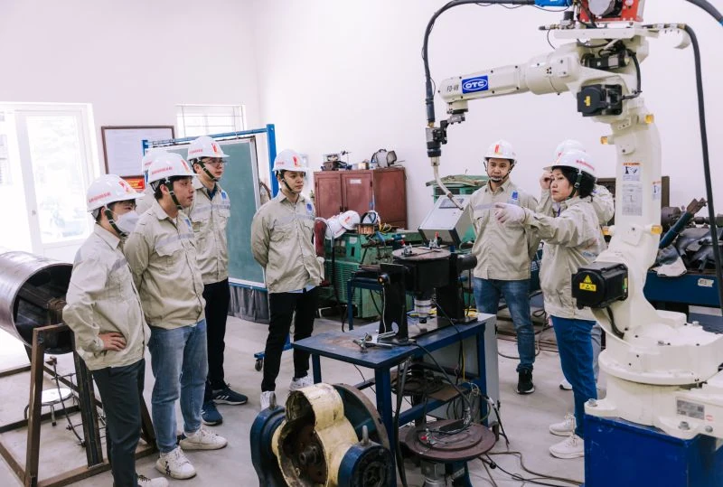

Bài viết gốc bằng tiếng Việt

TRUNG TÂM NGHIÊN CỨU CÔNG NGHỆ HÀN VÀ GHÉP NỐI (JWRI HUST-UOsaka)
Đào Tạo Nhân Lực Chất Lượng Cao Từ Đại Học Đến Sau Đại Học & Cấp Chứng Chỉ Hàn Quốc Tế
Là đơn vị chuyên môn liên ngành trực thuộc Trường Cơ khí – Đại học Bách khoa Hà Nội, Trung tâm Nghiên cứu Công nghệ Hàn và Ghép nối (JWRI HUST-UOsaka) không chỉ là trung tâm R&D uy tín mà còn là trụ cột đào tạo nguồn nhân lực kỹ thuật hàn hàng đầu Việt Nam. Trung tâm đảm nhận sứ mệnh cầu nối, hỗ trợ thực hiện các chương trình đào tạo chính quy của Đại học Bách khoa Hà Nội từ bậc Cử nhân đến Tiến sĩ, đồng thời liên kết chặt chẽ với các tổ chức quốc tế để tổ chức các khóa bồi dưỡng ngắn hạn và cấp chứng chỉ hàn chuẩn quốc tế.
1. Hỗ Trợ Đào Tạo Chính Quy Chuẩn Bách Khoa (Bậc Cử Nhân – Thạc Sĩ – Tiến Sĩ)
Trung tâm phối hợp cùng Trường Cơ khí và các đơn vị chuyên môn trong Đại học Bách khoa Hà Nội triển khai đào tạo bài bản các cấp học:
- Bậc Cử nhân / Kỹ sư:
- Hỗ trợ sinh viên chuyên ngành Công nghệ & Tự động hóa hàn, tiếp cận thực hành trên hệ thống thiết bị công nghệ cao từ dự án ODA JICA Nhật Bản.
- Trang bị kiến thức toàn diện từ công nghệ hàn tiên tiến (Laser 6kW, FSW, WAAM/In 3D kim loại) đến tự động hóa, robot hàn và thử nghiệm đánh giá chất lượng mối hàn (NDT).
- Bậc Thạc sĩ:
- Đào tạo thạc sĩ chuyên ngành theo hướng tiếp cận trình độ quốc tế.
- Thực hiện các đề tài nghiên cứu chuyên sâu gắn liền với bài toán thực tế của doanh nghiệp công nghiệp (như PVN, PVGas, EVN, Z115, KAM, Samsung).
- Bậc Tiến sĩ:
- Đồng hướng dẫn và tạo môi trường nghiên cứu chuẩn quốc tế cho các Nghiên cứu sinh trong lĩnh vực kỹ thuật hàn, luyện kim mối hàn và mô phỏng số.
- Kết nối các nguồn học bổng uy tín như Học bổng MEXT (Nhật Bản) và Chương trình DOJO hợp tác với Viện JWRI – Đại học Osaka, giúp nhiều nghiên cứu sinh bảo vệ thành công luận án tiến sĩ tại Nhật Bản.
2. Hợp Tác Quốc Tế Đào Tạo Ngắn Hạn & Cấp Chứng Chỉ Chuyên Ngành
Nhằm thu hẹp khoảng cách thiếu hụt kỹ sư điều phối hàn trình độ cao tại Việt Nam, Trung tâm chủ động hợp tác với các tổ chức hàn uy tín toàn cầu để tổ chức các khóa đào tạo và cấp chứng chỉ chuyên môn:
- Hiệp hội Kỹ thuật Hàn Nhật Bản (JWES):
- Tổ chức khóa đào tạo Điều phối viên hàn Nhật Bản (Japan Welding Coordinator) theo tiêu chuẩn công nghiệp Nhật Bản (JIS).
- Đánh giá và cấp chứng chỉ Associate Welding Engineer (AWE) và Welding Engineer (WE). Người sở hữu chứng chỉ đạt tiêu chuẩn làm việc trực tiếp tại Nhật Bản, các doanh nghiệp Nhật Bản trên toàn cầu, hoặc các dự án quốc tế do Nhật Bản làm chủ đầu tư/nhà thầu.
- Viện Hàn Quốc tế (IIW) & Hội Hàn Hoa Kỳ (AWS):
- Hợp tác triển khai các chương trình chuẩn hóa năng lực Kỹ sư hàn quốc tế (IWE), Thanh tra hàn (IWI/CWI), và Kỹ thuật viên hàn (IWS).
- Cập nhật các hệ thống chứng nhận quốc tế cho doanh nghiệp như: Certified Welding Fabricator (CWF), Certified Robotic Arc Welding Operator, và Certified Welding Supervisor.
- Hội Khoa học Kỹ thuật Hàn Việt Nam (VWS) & Liên đoàn Hàn Châu Á (AWF):
- Đồng tổ chức chuỗi hội thảo chuyên đề, đánh giá tay nghề và chuẩn hóa quy trình kỹ thuật cho cộng đồng doanh nghiệp trong nước và khu vực.
3. Đào Tạo Theo Đơn Đặt Hàng Chuyên Biệt Cho Doanh Nghiệp (Customized Training)
Dựa trên nhu cầu thực tế của các tập đoàn công nghiệp và doanh nghiệp FDI, Trung tâm thiết kế các khóa đào tạo ngắn hạn nâng cao tay nghề và tư vấn quy trình:
- Khóa đào tạo Công nghệ Hàn cho Kỹ sư: Khóa huấn luyện chuyên sâu cho Công ty TNHH MTV Điện cơ Hóa chất 15 (Z115).
- Khóa đào tạo Kỹ thuật Hàn Nhôm & Thi cấp Chứng chỉ AWS: Đào tạo lý thuyết và thực hành hàn nhôm đạt trình độ 1G, 2G, 3G theo tiêu chuẩn AWS cho cán bộ Công ty CP Công nghiệp KAM.
- Chương trình "Công nghệ Hàn và Ứng dụng": Đào tạo nâng cao chuyên môn cho đội ngũ kỹ sư Công ty Samsung Display Việt Nam.
- Huấn luyện Tiêu chuẩn & Quy phạm: Xây dựng quy trình hàn (WPS/PQR) và đào tạo nhân lực đáp ứng các quy phạm ASME, API, AWS D1.1, ISO 3834 cho các dự án nhiệt điện, lọc hóa dầu, và điện gió.
4. Thông Tin Liên Hệ & Đăng Ký Khóa Học
Các cá nhân, sinh viên và quý doanh nghiệp có nhu cầu tham gia các chương trình đào tạo hoặc đặt hàng khóa bồi dưỡng nhân lực xin vui lòng liên hệ:
- Văn phòng Trung tâm: Số 3, ngõ 15 Phố Tạ Quang Bửu, Phường Bách Khoa, Hà Nội.
- Cán bộ phụ trách: TS. Hán Lê Duy — Phó Giám đốc Trung tâm.
- Điện thoại / Zalo: 0966 064 486
- Email: duy.hanle@hust.edu.vn